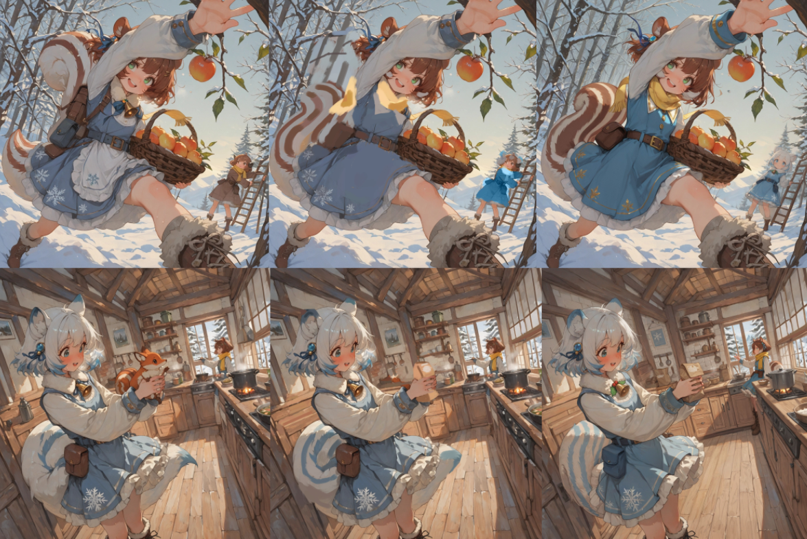
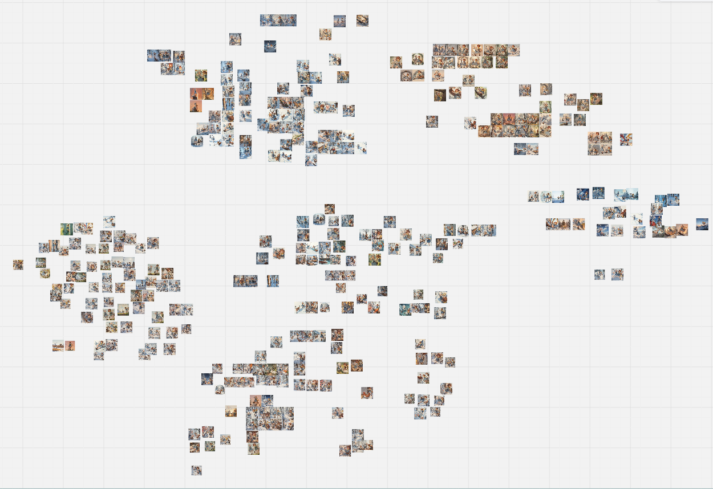
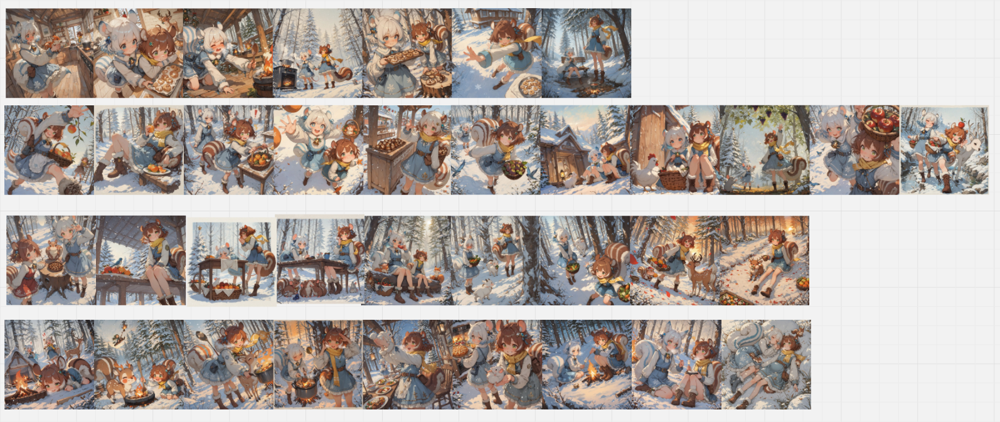

About
Asunaro Worksは、ストーリーボード制作を中心に、
背景美術・シーン構成・ビジュアル表現を行っています。
単体のイラストとしての完成度だけでなく、
画面の連なりや流れによって物語や空気感が伝わる構成を重視しています。
背景とキャラクターの関係性、視線誘導、間（ま）の取り方など、 ストーリーを成立させるための画面設計を軸に、 教育用途、物語表現、紹介・展示コンテンツなど、 目的に応じたストーリーボード制作を行っています。
案件内容に応じて、キャラクターデザインを含めた制作にも対応可能です。
主な活動・実績
- オリジナルストーリーボード作品の制作・公開
- 背景美術・背景素材の制作および販売
- ビジュアル詩・物語表現作品の制作
- 制作過程・技術整理のためのノート記事執筆
- オリジナルキャラクター関連コンテンツの展開
-
AIハロウィーン部門 マガジン表紙アートにて受賞
AICU JAPAN「アイキューマガジン Vol.17」雑誌表紙に作品が採用 - PinterestにAIアート継続投稿。（70万imp／月、4万imp／日）
制作環境・使用ツール
制作には主に ComfyUI を使用し、
ストーリーボードや背景表現に適したワークフローを構築しています。
生成後は、画像編集ソフトを用いて
レタッチおよびインペイントによる調整を行い、
画面の統一感や情報整理を含めた仕上げを行っています。
Contact
お仕事のご相談・お問い合わせは、以下のメールアドレスまでご連絡ください。
Production Process - 制作の舞台裏
ひとつの物語が形になるまでには、 多くの試行錯誤と検証の積み重ねがあります。

AIから生成された状態（左）を起点に、手作業での調整（中央）、 さらにインペイント（右）を重ね、画面の情報を整えていきます。

日々、数え切れないほどのラフを生成し、 日常の断片や動きのニュアンスを探り続けています。

そうして積み上げた膨大なラフの中から、 選び抜かれた一瞬だけが物語として繋がっていきます。
制作工程や使用している技術的な内容については、 noteにて制作ノートとして記録しています。
▶ 制作ノートを見る（note）